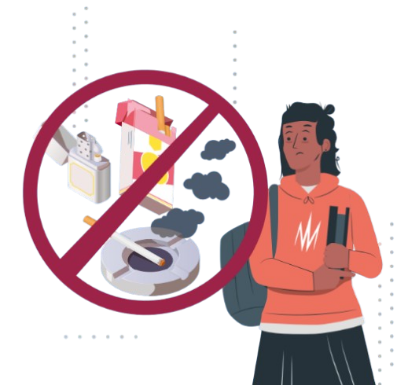

Tabaco
¡Te afecta a ti y a todos!
Propósito
Dar a conocer los daños a la salud causados por el consumo del tabaco y el humo que genera, tanto para quien fuma
como para las personas que lo rodean, promoviendo la conciencia sobre sus riesgos y las alternativas para evitar su uso.
¿Qué es?
El tabaco proviene de la planta Nicotiana tabacum y contiene nicotina, una sustancia altamente adictiva.
Se consume principalmente al fumar cigarrillos, cigarros o pipa, aunque también se utiliza en presentaciones como tabaco para mascar o inhalar.
Es una de las drogas legales más consumidas en el mundo y una de las principales causas de muerte prevenible.
El humo del tabaco contiene más de 7,000 sustancias químicas, de las cuales al menos 70 son cancerígenas.
No solo afecta al fumador, sino también a quienes inhalan el humo de forma pasiva, lo que se conoce como tabaquismo pasivo.
Formas de consumo
- Cigarrillo convencional: La forma más común; cada uno contiene alrededor de 12 mg de nicotina y múltiples sustancias tóxicas.
- Puros o cigarros: Contienen más tabaco y se inhalan más profundamente.
- Tabaco para mascar o aspirar: Se absorbe por las mucosas, provocando daños en encías, dientes y garganta.
Efectos durante su consumo
- Incremento temporal del estado de alerta o concentración.
- Sensación de relajación o reducción del estrés (falsa sensación).
- Irritación en garganta y vías respiratorias.
- Mal aliento, dientes manchados y pérdida del gusto o el olfato.
- Aumento del ritmo cardíaco y de la presión arterial.
Efectos después del consumo
Con el tiempo, el consumo de tabaco produce una fuerte dependencia física y psicológica.
El cuerpo necesita nicotina para funcionar con “normalidad”, lo que provoca ansiedad, insomnio, irritabilidad y problemas de concentración cuando no se fuma.
Además, se acumulan daños en los pulmones, el corazón y otros órganos vitales.
Principales daños irreversibles a la salud
- Cáncer de pulmón, boca, garganta, páncreas y vejiga.
- Enfermedades respiratorias crónicas como bronquitis y enfisema.
- Infartos y enfermedades cardiovasculares.
- Disminución de la capacidad pulmonar.
- Problemas de fertilidad y complicaciones en el embarazo.

Ten presente:
- Fumar daña prácticamente todos los órganos del cuerpo.
- El humo de segunda mano afecta gravemente a familiares, amigos y niños.
- Dejar de fumar mejora la salud desde el primer día y reduce el riesgo de muerte prematura.
Mitos y realidades
- Mito: “Fumar uno o dos cigarrillos al día no hace daño.”
Realidad: Aun pequeñas cantidades causan daños pulmonares y cardiovasculares acumulativos.
- Mito: “Fumar relaja o quita el estrés.”
Realidad: La nicotina crea dependencia y el alivio que se siente al fumar es solo temporal.
- Mito: “El cigarro electrónico es más seguro.”
Realidad: También contiene sustancias tóxicas y causa daños pulmonares y adicción a la nicotina.
- Mito: “Dejar de fumar después de años no sirve de nada.”
Realidad: Dejar el tabaco siempre mejora la salud, sin importar la edad o el tiempo que se haya fumado.